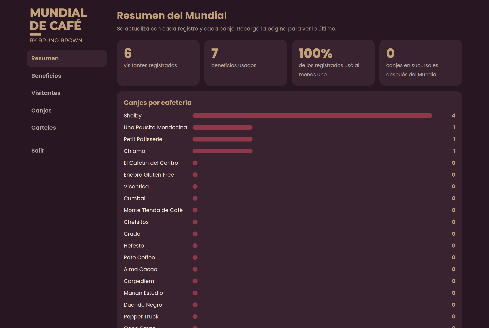
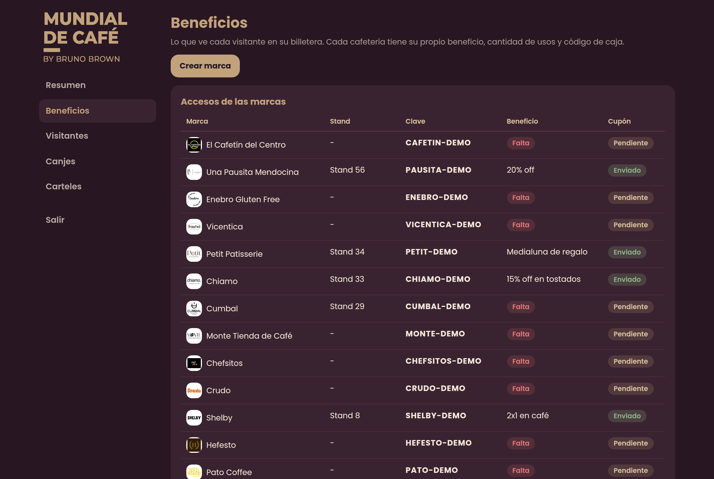
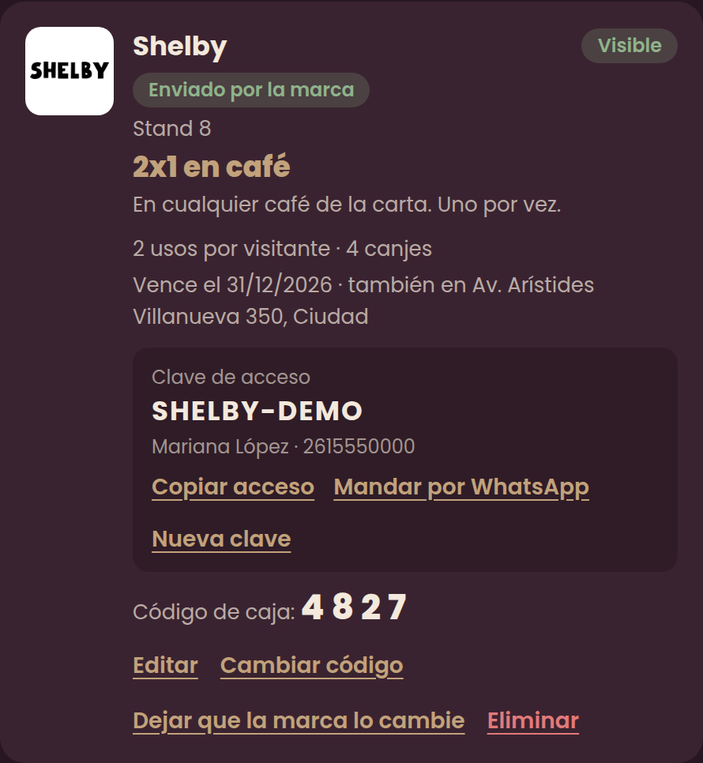
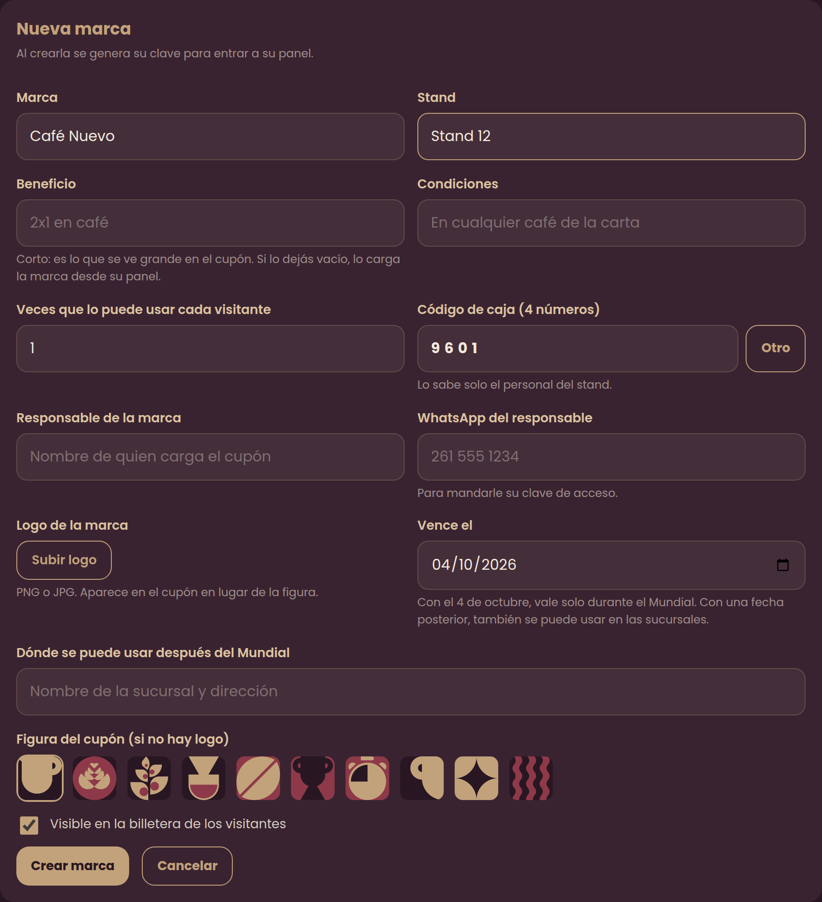
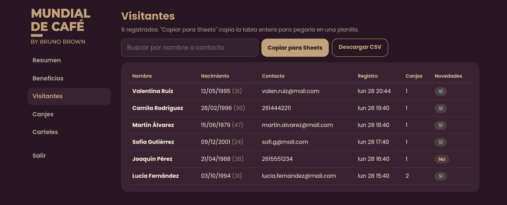
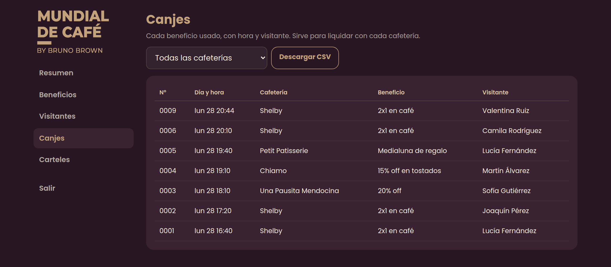
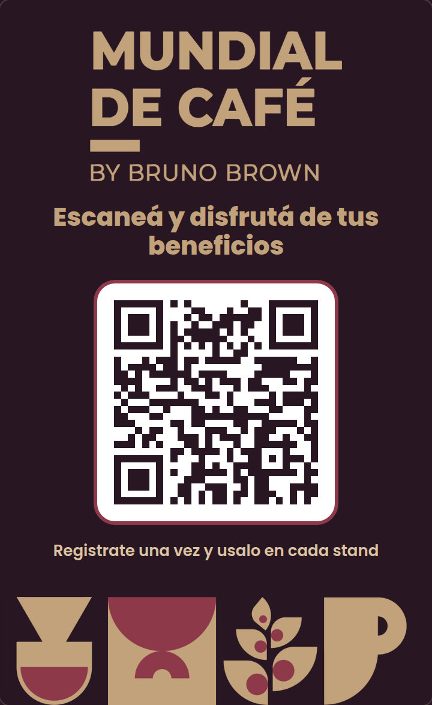
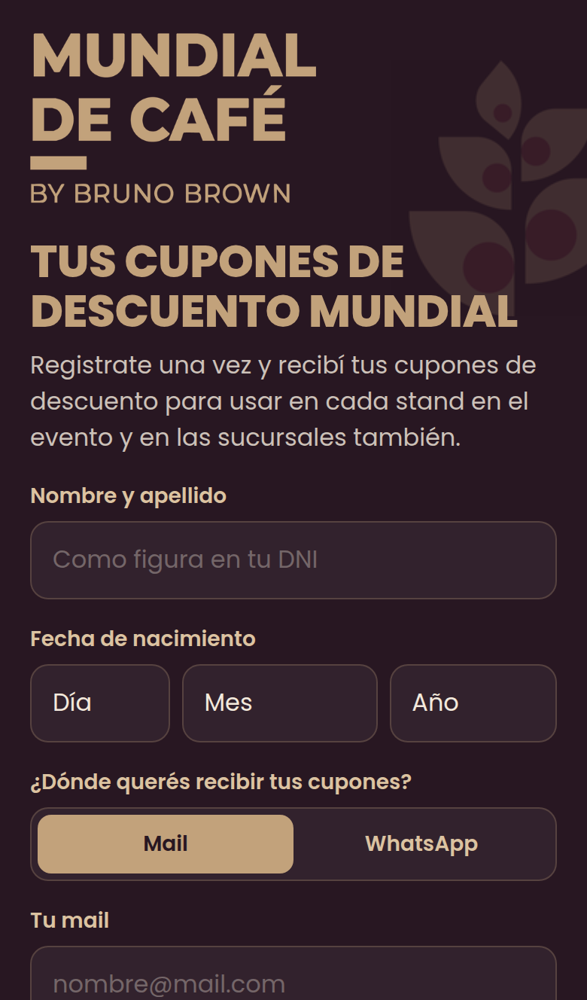
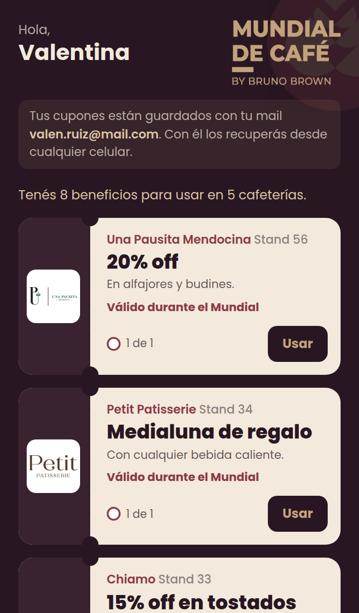
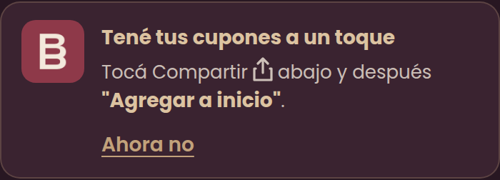

Manual de administración
El back office del Mundial
Cómo dar de alta las marcas, seguir los números, imprimir los carteles y resolver dudas durante el evento.
3 y 4 de octubre2026
Bodega ArizuMendoza
Uso internono compartir

Cómo dar de alta las marcas, seguir los números, imprimir los carteles y resolver dudas durante el evento.
 Las partes de la app
Las partes de la appEs una sola app web con una entrada para cada uno. No se instala nada: se abre en el navegador.
| Quién | Dirección | Para qué |
|---|---|---|
| Visitantes | mmc.saraimagineers.com | Registrarse, ver su billetera y canjear. Llegan escaneando el QR de los carteles. |
| Marcas | mmc.saraimagineers.com/marca | Cargar su beneficio con su clave y ver sus canjes. |
| Organización | mmc.saraimagineers.com/admin | Todo el back office. Se entra con la contraseña de administración. |
| Carteles | mmc.saraimagineers.com/admin/carteles | El cartel con el QR y las tarjetas de caja para imprimir. |
ResumenEntrá a mmc.saraimagineers.com/admin con la contraseña. La sesión dura 12 horas.

El ranking de marcas ordenado por cantidad de canjes. Sirve para ver qué stands están moviendo más.
BeneficiosEn Beneficios están todas las marcas: arriba la tabla con su clave y el estado de su cupón, abajo una tarjeta por marca con todas las acciones.

| Falta | La marca todavía no cargó su beneficio. |
| Pendiente | La marca no envió su cupón. |
| Enviado | La marca lo envió y quedó publicado. |
| Visible / Oculta | Si los visitantes lo ven o no en su billetera. |
Un cupón aparece en la billetera solo si la marca está visible, no eliminada y tiene beneficio cargado.
BeneficiosCada tarjeta muestra el cupón, los usos, los canjes, la clave, el responsable y el código de caja.

| Acción | Qué hace |
|---|---|
| Editar | Cambia cualquier dato: nombre, stand, beneficio, condiciones, usos por visitante, código, logo, vencimiento, sucursales, responsable y si está visible. |
| Cambiar código | Genera un código de caja nuevo. El anterior deja de funcionar al instante: avisale al stand y reimprimí su tarjeta. |
| Nueva clave | Genera otra clave para el panel de la marca y cierra las sesiones abiertas con la anterior. |
| Copiar acceso | Copia el link del panel y la clave, listos para pegar en un mensaje. |
| Mandar por WhatsApp | Abre WhatsApp con el mensaje armado al responsable. Aparece solo si cargaste su número. |
| Dejar que la marca lo cambie | Reabre un cupón ya enviado para que la marca lo corrija y lo vuelva a enviar. |
| Eliminar | Saca el cupón de todas las billeteras y bloquea el panel de la marca. Sus canjes quedan en el historial. |
Alta de marcasLas 34 marcas del Mundial ya están cargadas. Para cada una, seguí estos pasos.

VisitantesTodos los registrados, con su contacto, cuántos canjes hicieron y si aceptaron recibir novedades.

 Canjes
CanjesCada beneficio usado, con número, día y hora, marca, beneficio y visitante. Sirve para liquidar con cada cafetería.

CartelesDesde Carteles, en el menú del back office. Imprimilos cuando los beneficios ya estén cargados.


Lleva siempre a mmc.saraimagineers.com. Es el mismo para todos lados: mesas, paredes, entrada y barras. Tocá "Imprimir cartel".
Hay una por marca, con su código y cómo verificar un canje. Tocá "Imprimir tarjeta de…" debajo de cada una. Solo aparecen las marcas visibles y con beneficio.
La experiencia del visitantePara ayudar a quien se trabe, conviene conocer las cuatro pantallas.




Cada punto es un uso. Blanco: disponible. Bordó tachado: ya usado.
La billetera invita a agregar la app a la pantalla de inicio, con el ícono de la B de Bruno Brown. En iPhone, la primera vez que la abren desde el ícono les pide entrar de nuevo con su mail o WhatsApp.

Soporte en el eventoLas situaciones más comunes y cómo resolverlas en el momento.
En la primera pantalla, "¿Ya te registraste? Recuperá tus cupones", con el mismo mail o WhatsApp. No pierde nada.
Quedan dos billeteras separadas. Que use siempre la misma.
Que el cajero confirme el código en su tarjeta. Con 3 errores seguidos, la app lo hace esperar 1 minuto.
Es correcto: ya usó ese beneficio todas las veces permitidas.
En Beneficios revisá que la marca esté Visible, con beneficio cargado y no eliminada.
"Cambiar código", avisale al stand y reimprimí su tarjeta. Igual, cada visitante solo puede gastar sus propios usos.
"Nueva clave" y "Mandar por WhatsApp".
Corregilo vos con "Editar", o "Dejar que la marca lo cambie" para que lo reenvíe.
Es una captura de pantalla: el canje no vale. Que lo haga de nuevo en el momento.
El canje necesita conexión. Ofrecé el WiFi del evento.
Avisale enseguida a quien administra el servidor (Easypanel) y a soporte técnico.